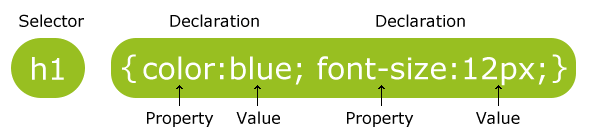

Syntax and Rules
There are three ways of inserting a style sheet:
With an external style sheet, you can change the look of an entire website by changing just one file! Each page must include a reference to the external style sheet file inside the <link> element. The <link> element goes inside the <head> section:
An internal style sheet may be used if one single page has a unique style. Internal styles are defined within the <style> element, inside the <head> section of an HTML page:
An inline style may be used to apply a unique style for a single element. To use inline styles, add the style attribute to the relevant element. The style attribute can contain any CSS property. The example below shows how to change the color and the left margin of a <h1> element:
What style will be used when there is more than one style specified for an HTML element? Generally speaking we can say that all the styles will "cascade" into a new "virtual" style sheet by the following rules, where number one has the highest priority:
- External style sheet
- Internal style sheet
- Inline style
With an external style sheet, you can change the look of an entire website by changing just one file! Each page must include a reference to the external style sheet file inside the <link> element. The <link> element goes inside the <head> section:
<head>
<link rel="stylesheet" type="text/css" href="mystyle.css">
</head>
An external style sheet can be written in any text editor. The file should not contain
any html tags. The style sheet file must be saved with a .css extension.
Here is how the "mystyle.css" looks:
body {
background-color: lightblue;
}
h1 {
color: navy;
margin-left: 20px;
}
Internal Style Sheet
An internal style sheet may be used if one single page has a unique style. Internal styles are defined within the <style> element, inside the <head> section of an HTML page:
<head>
<style>
body {
background-color: linen;
}
h1 {
color: maroon;
margin-left: 40px;
}
</style>
</head>
Inline Styles
An inline style may be used to apply a unique style for a single element. To use inline styles, add the style attribute to the relevant element. The style attribute can contain any CSS property. The example below shows how to change the color and the left margin of a <h1> element:
<h1 style="color:blue;margin-left:30px;">This is a heading</h1>
Cascading Order
What style will be used when there is more than one style specified for an HTML element? Generally speaking we can say that all the styles will "cascade" into a new "virtual" style sheet by the following rules, where number one has the highest priority:
- Inline style (inside an HTML element)
- External and internal style sheets (in the head section)
- Browser default
CSS Syntax
A CSS rule-set consists of a selector and a declaration block:
CSS Selectors
CSS selectors are used to "find" (or select) HTML elements based on their element name, id, class, attribute, and more.
The element Selector
The element selector selects elements based on the element name.You can select all <p> elements on a page like this (in this case, all <p> elements will be center-aligned, with a red text color):
The id selector uses the id attribute of an HTML element to select a specific element. The id of an element should be unique within a page, so the id selector is used to select one unique element! To select an element with a specific id, write a hash (#) character, followed by the id of the element. The style rule below will be applied to the HTML element with id="para1":
The class selector selects elements with a specific class attribute. To select elements with a specific class, write a period (.) character, followed by the name of the class. In the example below, all HTML elements with class="center" will be red and center-aligned:
If you have elements with the same style definitions, like this:
A CSS rule-set consists of a selector and a declaration block:

- The selector points to the HTML element you want to style.
- The declaration block contains one or more declarations separated by semicolons.
- Each declaration includes a CSS property name and a value, separated by a colon.
- A CSS declaration always ends with a semicolon, and declaration blocks are surrounded by curly braces.
CSS Selectors
CSS selectors are used to "find" (or select) HTML elements based on their element name, id, class, attribute, and more.
The element Selector
The element selector selects elements based on the element name.You can select all <p> elements on a page like this (in this case, all <p> elements will be center-aligned, with a red text color):
p {
color: red;
text-align: center;
}
The id Selector
The id selector uses the id attribute of an HTML element to select a specific element. The id of an element should be unique within a page, so the id selector is used to select one unique element! To select an element with a specific id, write a hash (#) character, followed by the id of the element. The style rule below will be applied to the HTML element with id="para1":
#para1 {
text-align: center;
color: red;
}
The class Selector
The class selector selects elements with a specific class attribute. To select elements with a specific class, write a period (.) character, followed by the name of the class. In the example below, all HTML elements with class="center" will be red and center-aligned:
.center {
text-align: center;
color: red;
}
You can also specify that only specific HTML elements should be affected by a class.
In the example below, only <p> elements with class="center" will be center-aligned:
p.center {
text-align: center;
color: red;
}
HTML elements can also refer to more than one class.
In the example below, the <p> element will be styled according to class="center" and to class="large":
<p> class="center large">This paragraph refers to two classes.<p>
Grouping Selectors
If you have elements with the same style definitions, like this:
h1 {
text-align: center;
color: red;
}
h2 {
text-align: center;
color: red;
}
p {
text-align: center;
color: red;
}
It will be better to group the selectors, to minimize the code.
To group selectors, separate each selector with a comma.
In the example below we have grouped the selectors from the code above:
h1, h2, p {
text-align: center;
color: red;
}
- !important
- by origin and importance
- user agent important declaration
- user important declaration
- author important declaration
- author normal declaration
- user normal declaration
- user agent normal declaration
- by specificity
- inline style
- number of ID selectors
- number of class selectors, attribute selectors, pseudo-classes
- number of type selectors and pseudo elements
- by order
Inheritance in CSS is the mechanism through which certain properties are passed on from a parent element down to its children. It's quite similar to inheritance in genetics, really. If the parents have blue eyes, their children will probably have blue eyes, too.
- Why inheritance is useful?
- you don't have to specify things for every single element type
- you can for example specify the font properties for the html or body elements and they will be inherited by all other elements
- How inheritance works?
- Every element in an HTML document will inherit all inheritable properties from its parent except the root element (html), which doesn't have a parent.
- Whether or not the inherited properties will have any effect depends on other things. Just as a blue-eyed mother can have a brown-eyed child if the father has brown eyes, inherited properties in CSS can be overridden.
https://www.w3schools.com/css/css_syntax.asp
https://www.w3.org/wiki/Inheritance_and_cascade
https://www.w3.org/TR/CSS2/cascade.html#value-def-inherit